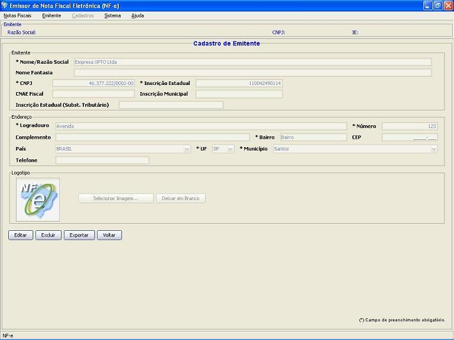

Software Emissor NF-e
Detalhamento/Edição
de cliente cadastrado
Opção de
detalhamento/edição de um emitente.
Existem duas formas para o detalhamento/edição de
emitente:
1 ) Caso o emitente
já foi iniciado
- Acessar o menu: Emitente -> Dados do
Emitente Atual
- Será
exibido os dados do emitente atual, com a opção
de realizar a Edição. Selecionar a
opção Editar
para a edição dos campos
do emitente
- Após finalizar a
edição
dos campos, clicar em Alterar
para salvar as
modificações
2 ) Pela tela de
cadastro de emitente
- Acessar a tela de cadastro de
emitente através do menu Emitente
-> Selecionar Emitente ou através da
tela inicial na abertura do aplicativo
- Realizar a
pesquisa pelo emitente cadastrado que
será editado
- Selecionar o
emitente a ser editado;
- Após
a seleção do emitente,
a opção de Detalhar ficará
disponível. Selecionar
a opção Detalhar
- A tela de
detalhamento com os dados do emitente selecionado
serão apresentados. Selecionar a opção
Editar
para a edição dos campos
do emitente
- Após
finalizar a edição
dos campos, clicar em Alterar
para salvar as
modificações
Editando os dados: clicar em Editar e alterar os dados
